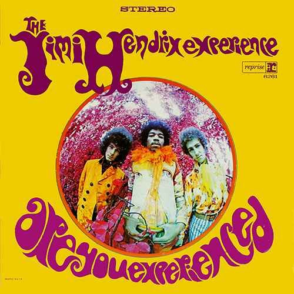
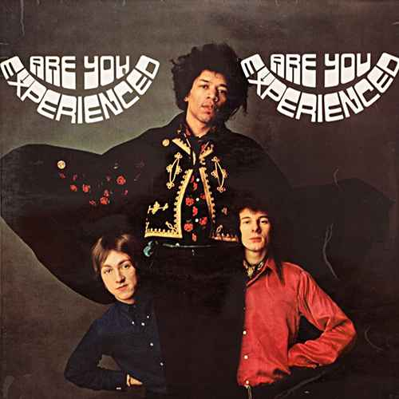
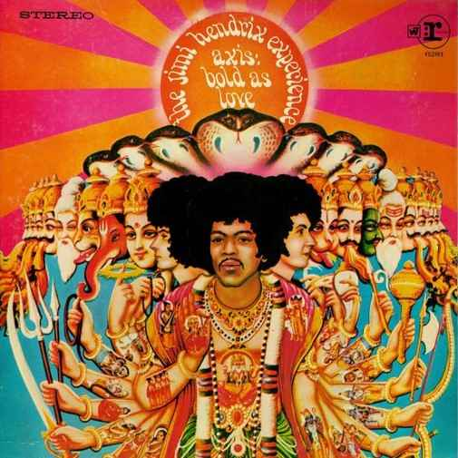

JIMI HENDRIX
ARE YOU EXPERIENCED?
Released May 1967
-
Musicians:
- Jimi Hendrix, Guitar & Vocals
- Mitch Mitchell, Drums & Backing vocals
- Noel Redding, Bass guitar & Backing vocals
Are Your Experienced is the debut studio album by the Jimi Hendrix Experience. Realeased in 1967, the LP was an immediate critical and commercial succes, and it is widely regarded as one of the greatest albums of all time. The album features Jimi Hendrix's innovative approach to songwriting and electric guitar playing which soon established a new direction in psychelic and hard rock music.
 - Side One
- Foxy Lady
- Manic Depression
- Hey Joe
- Love or Confusion
- May This Be Love
- I Don't Live Today
- Side Two
- The Wind Cries Mary
- Fire
- 3rd Stone from the Sun
- Foxey Lady
- Are You Experienced?
AXI:S BOLD AS LOVE
Released Dec 1967
-
Musicians:
- Jimi Hendrix, Guitar & Vocals
- Mitch Mitchell, Drums & Backing vocals
- Noel Redding, Bass guitar & Backing vocals
Axis: Bold as Love is the second studio album by the Jimi Hendrix Experience. Track Records forst released it in the United Kingdom on December 1, 1967, only seven months after the release of the group's highly successful debut, Are Your Experienced. In the United States, Reprise Records delayed the release until the following month. The album reached the top ten in the album charts in both UK and USA.
- Side One
- EXP
- Up from the Skies
- Spanish Castle Magic
- Wait Until Tomorrow
- Little Wing
- If Six Was Nine
- Side Two
- You've Got Me Floating
- Castles Made of Sand
- One Rainy Wish
- Bold as Love